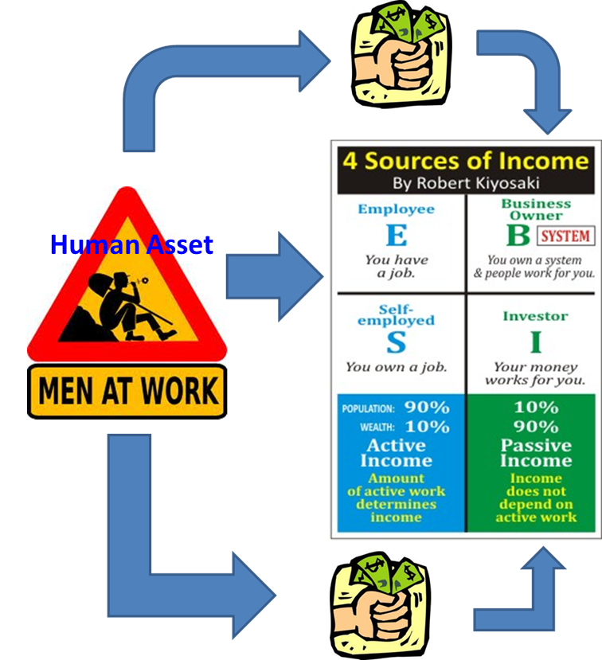

35 Easy Ways to Generate Passive Income in 2020
 Dollars & Cents Make Blogging eBay What Sells on eBay eBay Tips eBay Seller Interviews Success Stories Financial Black Belt Series Save Credit and Loans Debt Grow Protect Retire For Geeks Comics Books Movies & TV Video Games Tech Reviews & News Geek Short Stories Sci-Fi Horror Crappypasta Live Smart Financial Literacy Adversity Addiction Career Food Travel Weddings Let’s Connect Work With Me Submit a Guest Post Submit a Short Story About Press Your Money Geek Dollars & Cents Make Blogging eBay What Sells on eBay eBay Tips eBay Seller Interviews Success Stories Financial Black Belt Series Save Credit and Loans Debt Grow Protect Retire For Geeks Comics Books Movies & TV Video Games Tech Reviews & News Geek Short Stories Sci-Fi Horror Crappypasta Live Smart Financial Literacy Adversity Addiction Career Food Travel Weddings Let’s Connect Work With Me Submit a Guest Post Submit a Short Story About Press35 Easy Ways to Generate Passive Income in 2020
Michael Dinich October 30, 2020 Twitter Facebook LinkedIn RedditMaking money while you sleep has a beautiful ring to it.
Earning passive income provides the opportunity to do just that. Today's profitable passive income ideas will help you brainstorm your next money-making venture.
What is Passive Income?
Passive income is defined as income that requires minimal effort or perhaps even zero effort to earn. Passive income typically enables your money to work for you. It's a “work smarter, not harder” situation. We can compare it against active income, where your effort is 100% correlated to your income.
The best passive income takes the least effort. But today, we will consider many popular passive income ideas that will earn you money, whether you want to pay off a student loan, dig out of credit card debt, or put together a retirement plan. As long as it requires little passive activity, it could be a decent passive income stream.
Those who achieve financial independence will tell you that passive income streams are the key to success. The problem is that most supposed passive income ideas that you'll find are not passive at all. A second job, for example, isn't passive.
Since you're already busy with your everyday life, you want to find passive income that truly works while you sleep, play, or socialize, or whatever you want to be doing with your time. Most income sources require you to put in a LOT of work. But that completely negates the idea of “passive” income.
Do you want to make passive income? You will need to invest in an asset that produces passive income for you. Since you're not committing time to earn this passive income, you'll need to commit to another resource (e.g., money). Unless you are receiving money the old-fashioned way (inheriting it), there's no such thing as a free lunch.
The good news is that you don't need a pile of cash to start your passive income stream. If you already have an asset that you are not fully utilizing, that can serve as your investment. We'll get to how that works shortly.
For now, let's talk about a few passive income strategies. Stop letting your money stagnate in a bank account and lose its spending power. Some of these next passive income ideas will get you ready to invest in your future. Passive income means you want to start valuing your time and your money.
Truly Passive Income Ideas
These first ideas which we call “truly” passive require a one-time investment upfront and zero future effort. There's no upkeep, no fuss, no muss. These are some of the easiest passive income ideas that you could implement.
1. Alternative Assets
Alternative assets, or alternative investments, are much talked about these days. The volatility of the markets and extremely low-interest rates for the foreseeable future have many people looking for alternate options.
There are many types of alternative investments. Some of the more popular offerings are hedge funds, private equity, crowdfunded real estate investments, and commodities like wine or geeky collectibles .
We recently discovered another unique alternative investment, usually only available to the wealthiest of the wealthy: luxury watches.
We're not talking about a $500, $1000, or even a $10,000 watch. Instead, investment-grade watches merit a price range from a minimum of $50,000 up to $1 million.
Why inform you about an investment with that kind of price tag? Because the company we've discovered LuxeStreet, Inc has made this investment available with a minimum investment of $10,000. You can buy partial shares of an assortment of watches at that buy-in level. If you're an accredited investor looking for a unique alternative, you should take a closer look at LuxeStreet .
This particular luxury watch investment pays 12% per year at the rate of 1% each month. The best part of it is your investment is backed by luxury watches owned outright by Luxe Street. There are very few investments we're aware of that pay that kind of an income.
Here is our full review of LuxeStreet , where you'll find the offering's details and get our thoughts on the pros and cons of the investment.
Pro: Alternative investments give you exposure to unique asset classes, different from everyday stocks, bonds, real estate, etc.
Con: Alternative investing is a fledgling industry with developing regulations. There’s likely to be more risk than with typical investment choices.
2. Passive Real Estate Investing
Talk to any landlord, and they'll tell you that “passive” is the last word they'd ever use to describe having to replace a washing machine after an already full day. That's plain old work.
However, many companies give you the ability to invest in commercial and residential real estate projects without actually doing the heavy lifting yourself. It's often better to have your very own real estate agent or other real estate professional picking the properties.
One example is DiversyFund . It's a private REIT (real estate investment trust) that allows you to invest in professional real estate passively for as little as $500 . I love companies like DiversyFund because they don't earn money unless they earn money since they invest and manage the projects themselves. Having aligned incentives is important in investing.
Another detail that differentiates DiversyFund is how they invest. Rather than spread their expertise too thin, DiversyFund focuses its investments on lower-risk multifamily housing. They use technology to scour the country for properties that fit their specific criteria.
What criteria? Specifically, DiversyFund looks for high occupancy and positive cash flow properties, but that needs some work. These aren't complete renovations. Instead, a typical DiversyFund property could just need an updated bathroom or kitchen, or maybe just a fresh coat of paint.
The fact that DiversyFund does all of the work themselves means they have lower costs than their competitors. After the aforementioned minor renovations, the upgraded properties merit increased rents. And that increases your cash flows and the value of the properties.
Holding periods for DiversyFund properties tend to be in the five-year range. Preferred returns for their properties are in the 7% range.
Both DiversyFund and their passive investors e.g., you benefit from this business model. When incentives are aligned, you give yourself the best chance to win.
Pro: DiversyFund does all the hard work for you, giving you exposure to residential real estate without requiring you to be a landlord.
Con: There’s always a give-and-take to using a third party—namely, their fees.
3. Earn Passive Income with Lending Club
If you're looking for another way to earn passive income, you may want to consider Lending Club's peer-to-peer lending platform.
Lending Club allows passive investors to diversify their assets by investing in different types of loans. Wait in loans? That's right. Lending Club allows you to loan your money out to people and groups looking for funding. The type of loans you choose will determine your investment return and risk exposure (remember, risk and return are related).
All you need to do is invest as little as $25 in a single loan. Your investment is combined with other investors to make up the entire loan amount. While others may invest more, many investors choose to stick with $25 minimums across multiple different loans. This diversification tends to decrease risk.
So how do you generate income with Lending Club?
After you make your initial investment, you will start earning passive income from the borrowers’ repayments. As a borrower pays down their loan, you will receive monthly interest payments.
Like all loans, Lending Club charges interest to the borrowers. These interest rates may vary and will be determined by various factors, including the borrower's creditworthiness and loan amount. Even if you don't reinvest your passive income back into the platform, you will still earn a return on your investment from this interest.
Since this is a peer-to-peer lending platform, you're essentially the lender. That means that you collect the principal and the interest. After you're repaid, you can choose whether to cash out or reinvest your funds in other Lending Club loans.
Pro: Lending Club allows you to help many different loan seekers while earning passive income yourself.
Con: If a few of your loaners cannot repay your loan, it can be easy to miss out on profits or potentially even lose money.
4. Invest in Dividend Stocks
Dividends are profits paid out to owners of stocks. Some companies pay dividends regularly, which means that dividends can become a dependable source of income.
Investors who love dividend-paying stocks will talk about their investment is generating dividend income and appreciating. In other words, they're getting a regular supply of money (from the dividends), and the underlying stock is increasing in value (as the company grows).
Keep in mind that stocks with high dividends still carry risk. Dividend stocks can drop in value like any other stock. Historically, dividend-earning stocks drop in price less than the overall stock market. They tend to be steadier in price less upside, less downside. But you should never invest in any stock, a high-paying dividend stock or otherwise, without understanding that you're taking a risk.
They are similar to other equities in that they're usually best to buy and hold for a long time. And with that long-term mindset, it's reasonable to purchase stocks even at all-time highs .
Some people even rely on dividend checks for their regular expenses. They receive thousands of dollars each quarter from their dividend investments. And that might require you to own a significant number of shares!
But if you have some extra cash to invest and understand the risk involved, dividend stocks are something to consider. Perhaps an index fund full of them would be right for you. Just make sure you learn about the risk (or lack thereof) from the index fund bubble .
Pro: A proven income stream with over 100 years of heritage, backed up by some of the world's most blue-chip companies.
Con: “Prior results do not guarantee future outcomes.” Your initial investment could lose 50% overnight if the stock market crashes.
5. Open a High-Interest Savings Account
If you are afraid of investing, there's a chance you have a decent chunk of change saved in a checking or savings account. Saving money is always a good thing.
Sadly, brick-and-mortar banks barely pay any money in interest. Institutions like Wells Fargo, Chase, Bank of America, and others pay around 0.08% interest. You could have $100,000 in that bank, and you'd earn less than $100 per year in interest. That's nothing!
That's why keeping your savings in a high-yield savings account is clutch.
The best high-interest banks are online-only, so you won't need to mess with going into the bank to get started. The best part is that as of this writing (October 2020), they pay as much as 0.80% interest per year. So with $100,000 in the bank, you'd earn $800 per year. That's much better!
Even if you don't have a ton of money saved up, you will still make way more money than you would with a regular checking or savings account. One of my favorites is VARO Money. They consistently pay higher rates than almost any local or national brick-and-mortar banks.
You could also look into money market accounts, treasury bonds, or certificates of deposit for low-risk, stable return investments.
Pro: As safe as safe can be.
Con: Meager returns. In fact, inflation might cause you to lose buying power.
P.S. For passive investing or financial planning ideas, make sure you understand the tax ramifications with the Internal Revenue Service (IRS).
6. Long-Term Index Fund Investing
Do you believe that the global economy will continue to grow and progress? And do you have 10+ years to invest money and build eventual passive income streams? If so, index investing might be for you.
An index fund is a mutual fund that owns a wide assortment of assets. Some index funds are fairly focused (e.g., an automotive index fund might own all automotive stocks). Other index funds are broad (e.g., a total market index fund might own every single stock on the stock market.
Either way, the idea of index funds is that they lower risk by diversifying their assets , and they lower their costs by enacting simple asset ownership rules. Index funds don’t look for the needle in the haystack. They just buy the whole haystack.
Over the long run, index investing has proven to be a very successful method of portfolio growth. And if your portfolio is growing, you can skim off some of the profits as passive income.
Pro: Proven method of long-term monetary growth and successful retirement planning.
Con: Not a short-term passive income solution.
7. Become an “Angel”
Angel investing is a high-risk, high-reward proposition. It gets its name because it answers the question, “Who would invest in a startup company with no track record, no customer base, and no surefire path to revenue growth?” Answer: only an angel.
Of course, angel investing also provides a path to equity ownership in an eventual global company's infantile stages. Could you imagine buying into companies like Shopify or Uber when they only had a handful of employees? Small angel investment can grow by 1000x! Of course, that same investment can just as easily disappear within 6 months to a year.
Angel investing is a feast-or-famine proposition.
Pro: Immense upside. A hands-off way to help entrepreneurs trying to change the world.
Con: As high risk as anything mentioned in this article.
Semi-Passive Income Ideas
We've got 100% passive income ideas out of the way. But there are still a lot of great “semi-passive” ideas that you can utilize. These take a bit more effort to execute, but they can still build long-term wealth.
1. Put Your Real Estate to Work
Utilizing your real estate is a great way to turn your property into rental income. You don't have to buy a rental property to have rental property. Use what you already own!
1A. Use Airbnb or similar services
Rewind 20 years ago. Could you imagine that strangers would painlessly be staying in one another’s houses without ever meeting, talking, or interacting? Airbnb and similar services have revolutionized where we stay when we travel. And it has opened up serious passive income doors for you and me.
Unsure how much money you can make?
Simply log on to Airbnb and check out what your market looks like. There are sure to be other Airbnb hosts in your neighborhood. What are they charging for a room or their whole house? Would you be interested in offering up your room/house for that same price?
Granted, you’ve still got to ask yourself: is this money worth the effort? Being an Airbnb host isn’t truly passive. Sure, you already have the house (and that’s most important). But you still have to act as part landlord, part maid, and maybe even cook your guest some meals. That’s work.
But if you are excited by the idea of meeting new people and making some solid side cash, then Airbnb hosting might be perfect for you!
Pro: Meet new people every week while getting paid to do so.
Con: You have to become part landlord, part cook, part maid, etc.
1B. Rent Out an Extra Bedroom
If you own a home, there's a decent chance you have an extra room that hardly gets used. Perhaps it's the guest bedroom or kids' old playroom. Consider renting it out for extra income.
Of course, hosting a long-term guest isn't for everyone. There are some pros and cons to compare. The most obvious trade-off is a few hundred bucks in monthly rent compared to the inconvenience of having a guest in your home.
But if you don't mind the company, it may be a no-brainer!
It's easy to see how this could lead to a few thousand dollars a year. After several years, you'll have accrued enough extra income to start planning an eventual early retirement.
Just make sure you both sign a formal rental agreement so that everyone is on the same page.
Pro: Turn an unused resource in your home into an income source. And hey, maybe you’ll make a new friend!
Con: Another person is living in your house your kitchen your bathroom. Even if they’re a saint, having a housemate can be tough.
1C. Rent Extra Land
Perhaps the idea of hosting someone inside your house isn't for you. But how about hosting someone on your property by renting your extra land?
There is a tiny home bonanza sweeping the country right now. People are choosing to live in tiny homes and embrace a minimalist lifestyle. For a lot of those people, the only downside is where to place their tiny house. If they want to live in a tiny home to save money, it likely doesn't make sense to spend hundreds of thousands of dollars to buy a land lot.
If you have some land, this creates an opportunity for you to rent out space on your lot. You'll want to make sure you don't violate any laws or codes in your city, town, etc.
But if you're not using the land, why not get paid a few hundred bucks to let someone place their tiny home there? You're making the most of a resource you aren't using and giving someone else a place to live. Win-win.
Real estate income and rental properties are often considered passive, or at least partially passive. It might feel risky if we face another Big Short real estate bubble, but doesn't it feel like rentals will always be needed? Either way, they are trendy methods to build long-term wealth.
Pro: Compared to other ways you can share your real estate, this is pretty hands-off.
Con: Adding new buildings to your property can be a significant headache due to local laws and zoning codes. Do your homework!
2. Renting Your Car
Companies like Turo and GetAround are making it easier than ever to rent out your car when you aren't using it. And let's face it: if you live in an area with Lyft and Uber service, there's a chance you might not even need your car daily.
You'll want to keep in mind that renting out your car will mean additional wear-and-tear on your vehicle, so your repair bills might increase. But users have said it's well worth it for the passive income checks coming in the mail.
If you have a second car sitting around or have begun to bike to work and no longer need the vehicle daily, this might be the perfect way to start generating some passive income.
Pro: A car is one of the worst investments you can make. But renting your car out makes that investment less bad.
Con: More miles = more repairs. And what if the car renter spills their burrito all over your nice clean seats?
3. Refer Friends to Great Products You Already Use
Companies like Rakuten.com (formerly eBates) have existing referral programs that pay out cash for every friend you can refer to. If you have many friends or social media followers, this can be an effortless way to earn money.
All you have to do is set up an account by clicking the join now tab at the homepage's top. Once the account is up, go to your account settings and click where it says refer and earn to get a link to send your friends.
To find other programs like this, it's super simple. Nearly any company that delivers food or other products have similar programs.
It takes a little effort upfront and then some consistent effort to keep your friends or followers using the service.
Pro: Many people buy lots of things, and most people would like to save money if they can.
Con: You don’t want to be known as the “let me sign you up with my referral code” guy. There’s a fine line between passive income and alienating the people in your life.
4. Try Affiliate Marketing
I started a website from scratch. It was not an easy undertaking (unless you know what you are doing and have done it before). If you don't want to build your site, why not find an existing website that is already earning money from affiliates and taking that site over?
Affiliate marketing is where you get paid a fee for referring new customers to brands.
For example, if you own a website that compares prices (e.g., something like Kayak.com), you can show price comparisons to your customer and then earn commissions for referring those customers to eventual purchases.
This type of investment can be genuinely passive if it's already generating revenue with very little hands-on involvement. But keep in mind: if a site is making revenue, it will not be cheap to buy. Alternatively, a website might require some slight upkeep to make sure it runs smoothly and keeps your passive income coming.
Pro: Once the ball is rolling, you can make a lot of money very quickly.
Con: Creating a website can be tough. And buying one can be expensive.
5. Run a Site with Display Ads
Affiliate marketing isn't the only way to make money online . Some websites sell digital products. But most common is to rely on advertising revenue as their primary source of building a passive income.
If you've spent any amount of time on significant sites like ESPN, The Weather Channel, Google, etc., then you've seen lots of advertisements on them. If you don't remember seeing ads, then you either have a formidable adblocker, or you've learned to ignore them. Nice!
As you can imagine, these sites have ads on display because they get handsomely rewarded for doing so. The key to generating income in this way is to have a website with a lot of users. There is a strong correlation between the number of eyeballs on your website and the amount of income you'll make. Easy enough to understand.
If you have a friend with an old site that they never use, it might be worth acquiring it if they have traffic. Adding ads to a website is super simple, and you could start earning some passive income quickly.
Pro: It’s the oldest and most consistent business model on the Internet.
Con: You’ve got to find the balance between earning money and driving away readers due to too many spammy ads.
6. Create a Print-on-Demand Online Store
Do you have a graphic design touch? If so, you could create iconic designs and sell them in an online store. Your customers can simply download the designs they enjoy and print them on their own.
Alternatively, you could outsource the printing to a third party e.g., a customer orders one of your t-shirts, and a third-party print shop makes the t-shirt and sends it to the customer.
You’ve got to do some work upfront. What does popular culture enjoy, and how can you make graphic designs to meet that desire? This takes time, skill, and some open-minded knowledge about what the world wants.
But if you’re up for it, you can create a steady passive income stream from print-on-demand graphic designs.
Pro: A creative outlet that can lead to long-lasting passive income. Possible to outsource nearly all of the sustaining work.
Con: It’s possible to create a whole portfolio of graphic design that nobody actually wants. You’ve got to create something desirable.
7. Create an App
Are you a programmer? Heck, do you have a decent understanding of math and logic? If so, you can quickly teach yourself various app coding languages and start creating your very own smartphone apps.
As Marc Andreessen says, “Software is eating the world.” Everyone has a smartphone, and everyone is looking for ways to make their lives easier via software on those phones. The need is out there. Can you fill that need?
Where there’s demand, there’s an opportunity for passive income. Do you remember Flappy Bird?
In 2013, this simple single-player smartphone game seemingly took the world by storm, garnering millions of downloads. The app developer claimed to be making $50,000 a day from in-app advertising. And that game itself is straightforward.
Now, Flappy Bird struck gold. You and I might never be able to replicate that. But if you took a month to create an app and then made $20 per day for the next five years, that’d be close to $30,000 in passive income. That’s not too unrealistic.
Pro: App development is an industry that will only grow as smartphones become more ubiquitous worldwide.
Con: Requires specific domain knowledge, which can be a high barrier to entry.
Passive Side Hustles
These passive side hustles require a steady low-effort to execute. They aren't fully passive but still can provide a lot of income compared to the effort involved.
1. Learn to Flip Products on eBay
There's a chance that you know a certain product better than anyone else. Maybe it's game consoles or cell phones. For others, it's makeup, shoes, or handbags. The point is: you might be an expert and not even realize it.
You could earn a significant side income by learning the buy and sell that product for a profit on eBay. This is frequently called “flipping.” The learning curve may be a little steep at first. Once you get the hang of it, you can be churning out additional income regularly.
Here's a guide to selling on eBay to help you get started.
The beautiful thing about eBay is that there are so many buyers and sellers. All you have to do is find opportunities where you can buy products for less than they are worth (using your expertise!) and flip them.
Pro: There’s a lot of pure profit to be made, as long as you know what you’re doing.
Con: Dealing with anonymous parties can be tough, and eBay typically sides with the buyer over the seller. So if you’re selling for profit, it can be easy to get burned.
2. Use Your Washing Machine
If you don't have money to invest, you may need to make money quickly. And if you have a washing machine and dryer, there's a good chance you can start right away. Sound crazy? Maybe it is. But let me explain.
Several companies bill themselves as the Uber for Laundry , and they are pretty simple. You sign up, pick up clothes from people who live near you, and wash them. Once you deliver their laundry, you'll get paid.
It's that simple.
If you are enterprising, you could always pick up several different loads and head to a laundromat to simultaneously wash several loads. But be careful so that you know what to do with all of that cash you'll make.
I recommend you invest in it!
Pro: Turn an unused resource in your home into an income source. You don’t need incredible skills to wash people’s clothes.
Con: Everyone has a different definition of “dirty laundry.” Are you sure you want to test yours?
3. Become a Tutor
Getting into top schools and programs is as challenging as ever. Getting a high-demand job is just as tricky. That means that there's a lot of people looking for expert information. It might be how to pass a test or h ow to write a resume . So if you can tutor them, you could earn top dollar.
And the crazy thing is that with all of the new technology available, you can easily tutor kids in China and make money while sitting on the couch in Texas. Check out companies like VIPKid for online tutoring jobs .
You can make a lot more than minimum wage by working around your regular work schedule. This type of gig is perfect for those seeking to make extra money on the side.
Pro: You have a lifetime of knowledge. Someone out there is probably looking to learn what you already know.
Con: Teaching can be tough, and your students will expect results. How are you going to react when you’ve explained something ten times, and they say, “I still don’t get it.”
4. Become a Collectibles Expert
What do stamps, Beanie Babies, and Pokémon cards have in common? They are all niche collectibles with small but thriving markets. You can do a few hours of homework on a particular collectible and immediately become more knowledgeable than 99% of the population. And that knowledge is power.
People are selling their old “junk” every day for pennies on the dollar. If you develop the skills to recognize treasure from trash, you can turn their pennies into your dollars.
The world of collectibles is incredibly diverse, ranging from old arrowheads to Christmas ornaments to classic books. But where there’s a paying customer, there’s an opportunity to earn passive income. If you do the homework upfront, you could earn a serious side hustle passive income.
Pro: Niche markets where large differences in knowledge can lead to significant profit margins.
Con: An incredibly diverse range of products and a real risk of getting fooled by counterfeits (a.k.a. losing money).
5. Give Lessons
Are you a highly-trained athlete or artist? Do you have demonstrable skills, competitive experience, or professional licensure? Then you could make significant side hustle income by giving lessons.
The biggest customers? Parents and their kids. There’s a huge demand from parents who want their children to have good golf swings, nice singing voices, and the ability to speak in public.
And you don’t need to be a professional opera singer or a world-traveling tennis player. All you need is enough skill so that the parents and their children respect your expertise. There are plenty of former DIII athletes and local art teachers who make $50-$100 per hour by giving lessons in their expertise fields.
Pro: Lots of potential clients, a high demand for your skills.
Con: While the effort to acquire your skills is a passive sunk cost, the effort to give the lessons is quite active.
Residual Income
Passive income, semi-passive income, side hustles, and now residual income?!
You may think we're wordsmithing or splitting hairs, but there is a difference between passive income and residual income. Though many who write about it don't differentiate. Here is a perfect definition from Webster :
a payment (as to an actor or writer) for each rerun after an initial showing (as of a TV show)The fee paid to an actor for reruns is the best representation of how I think about residual income.
Examples of Residual Income
1. Royalties
Let's say you wrote a book. It could be an eBook (e.g., via Amazon's Kindle direct publishing) or a traditional book published in print. The publisher pays you an upfront fee for the work. Once they recover that fee from sales, any additional income you receive (net the publisher's cut) is residual income.
You've done the work by writing the book upfront. You only did the work once. Yet all sales proceeds going forward provide you residual income.
Pro: A steady income stream from now until you die.
Con: You’ve got to write an excellent book (or make a good movie, show, etc.). It takes skill and hard work.
2. Product Sales
Not the writing type? That's fine. Let's say you're a widget salesperson.
You sell the widget for a set price. Part of the sale is for ongoing service. The purchaser pays a monthly (or other) ongoing fee for your company to service the widget. The company receives the money, the service department handles the continuing service, and you get a piece of the ongoing fee from the service contract that's residual income.
In the insurance world, salespeople get an upfront commission for the initial product sale. The sale might be life insurance, property, and casualty or health coverage. After the original commission gets paid, the salesperson receives an ongoing residual income from the initial sale as long as the customer continues to pay the premiums. Service usually comes from the client services team, not the selling agent.
Pro: There’s a very high ceiling. Sales commissions and residual income frequently have no upper limits.
Con: Sales is a tough job. Your failures are very apparent and right in your face.
3. MLM Marketing
For those not familiar with it, MLM is a multi-level-marketing program. I'll explain how it works below.
Before you go off on me for putting this in the post, give me a minute to explain. I'm not endorsing MLM sales or saying you can make money at it. However, the concept of MLM marketing is based on residual income.
In MLM programs, participants are encouraged to sell a company's products. The participants get paid for that. But big money typically comes from recruiting others to sell those products under your account. You encourage those folks to recruit others, etc. The idea is to build a sales empire sometimes shaped like a pyramid and make a bazillion dollars. Sorry. The sarcasm got away from me.
People at the top of this food chain earn residual income via the people underneath them in their “line.” The folks at the top aren't doing the selling themselves yet are making income from the sales of those underneath them.
Though similar in many ways, residual income isn't the same as passive income in the traditional sense.
Pro: Turn your entrepreneurial spirit into passive income.
Con: MLMs are very controversial. Don’t get trapped by one, and don’t alienate your friends and family.
Buy a Small “Hands-Off” Business
Small business owners will tell you: it’s hard work, and there’s always something to do. Very few business owners would classify their income as passive. In fact, it’s probably the opposite of passive. It’s very, very active!
But some small businesses can, essentially, operate on their own. They might require a couple of hours of upkeep or a little bit of oversight, but that’s it! Let’s get to some examples.
1. Car Wash
Most modern car washes fall into two camps: they are either self-serve or fully automated. The car owner either gets out and washes the car themselves, or they drive up to a conveyor belt that sucks them through a tunnel of bubbles.
In either case, there are likely very few employees and almost no upkeep. All you have to do is make sure the soap is fully stocked and the water is running. Sounds like the perfect job for a teenage part-time worker.
The upshot is: car washes provide steady income with almost no real effort from the owner. And that owner could be you.
2. Storage Rentals
People love stuff. And the more stuff they collect, the more likely they will pay a third party to store that stuff. And that third party could be you!
A storage rental facility requires some significant overhead upfront, but then well, it requires almost nothing. All you need is one employee to oversee the lot and handle the customer sign-ups.
You collect regular monthly rental fees, just like a landlord. But unlike a landlord, you’ll never get midnight phone calls because the furnace stopped running. The storage facility and all the stuff within it just sits there. And you just collect your cash.
3. Laundromat
Last but not least, the laundromat is another great “hands-off” small business that could earn you passive income. Perhaps you’re underwhelmed since you’ll only be collecting profits $2.25 at a time. But think about it: what are your costs?
You’ve got to keep the lights on. You pay for water for washing and electricity for drying. But otherwise, the customers do all the work themselves! Dozens, if not hundreds, of customers might use your laundromat on a typical day. That could easily add up to thousands of dollars per month, most of which is pure profit!
So after the initial start-up costs have been paid, what’s left? Passive income until the cows come home.
Pro: Very high potential for long-term passive income, with a small amount of active work as a business owner.
Con: It likely requires a high setup cost and is probably not fully passive.
4. Become a Franchisee
What if you could open a business that had worldwide recognition from Day 1? That’s what you can do by becoming a franchisee. The most common example of this occurs with popular fast-food chains like McDonald’s or Burger King.
Most individual fast-food restaurants are not owned and operated by the main corporation, but instead are owned and operated by a local small business owner, a.k.a. the franchisee. This person might pay rent or licensing fees to the main corporation, but they keep most of the restaurant’s profits for themselves.
If you want to turn this idea passive, hire good employees to manage the franchise for you. They deal with the day-to-day operation; they deal with the headaches. You collect the profits.
Pro: An established business model with a very high ceiling (e.g., multiple locations at high-profit margins)
Con: Requires high initial cost and can easily become non-passive if you have a difficult time “letting go” of your involvement
5. Buy ATMs
Where do those fees go when you use an ATM? Answer: straight to the ATM owner’s pockets. And those pockets could be yours.
If you find a good location for an ATM, you can make significant amounts of passive income. The key is finding an under-utilized area with a high density of people needing cash.
Much like the laundromat or car wash, it might feel like earning 2 dollar ATM fees is a slow path to wealth. But it’s incredibly hands-off, and the customers do all of the “work” themselves.
Pro: Very hands-off. Good business model as long as people need money (and they always do).
Con: Requires a great location. And your business involves an unguarded box full of cash. That’s risky.
Other Simple Ideas
Here's a quick list of some of my final ideas to generate passive income. If nothing else has struck you fancy so far, you can earn some cash flow from these different passive income recommendations. When it comes to creating passive income, nothing is too crazy.
Cashback Credit Cards or Cashback Rewards Cards. If you're spending money anyway, you might as well get some cash back for it. Vending Machine Business. Owning a vending machine(s) can be a low-effort tactic to earning a steady income. Just remember location, location, location! Selling stock photos. I'm a huge fan of finding ways to sell your photos online. Here are the nine unique ways we've found to make money by selling your pics . Your image credit can earn you passive income. Start YouTube Channel(s). Do you have a message to share with the world? A bent for videography? A personality that people want to watch? If you gather a following on YouTube, you can earn a significant passive income from advertising revenue. Create an online course. Do you have something you can teach the world? There are plenty of paying students who would buy your course. Play games for money. Mistplay is an awesome app that allows you to play games and make money. Check out our full review here. But Mistplay isn’t the only one. We’ve got a comprehensive list of the best apps that pay you to play games .The Bottom Line
Remember, generating passive income requires creativity and some initial work to set things up. If you're already busy, that's even more true for you. You've got to consider the value of time !
But if you can take the time to learn whatever you think you'd be good at, you can make some passive income. Maybe a lot of passive income. Did you think of any different income streams today? Create your own income streams! It's good financial cents er, sense to start building wealth in your life.
I hope you can find at least one of these ideas intriguing enough to give it a try. Don't listen to the negative nellies or the pounding pundits of pessimism (credit to Brian Wesbury for that one). Do your homework. Understand how much passive income you need. Learn what you need to know. And give it a try. You just might be the talk of the town because you'll be making money while everyone else is breaking their back.
This post originally appeared on Your Money Geek .
How to Make MoneyShare Article:
About the Author
Michael Dinich
Michael launched Your Money Geek to make personal finance fun. He has worked in personal finance for over 20 years, helping families reduce taxes, increase their income, and save for retirement. Michael is passionate about personal finance, side hustles, and all things geeky.
View All ArticlesYou might also like
How to Make Money Playing Video Games (16 Easy Ways)
December 3, 202030 Best Apps that Pay You to Play Games ($$$)
December 3, 2020Ibotta Review Your Ultimate 2020 Guide To Earn Cash
December 3, 2020Other stories
Interview: Adam David Thompson Talks Netflix’s Vampires Vs. The Bronx
Next StoryDC’s Future State Event Will Feature Nubia in ‘Immortal Wonder Woman’
Previous StoryRecent posts
How to Make Money Playing Video Games (16 Easy Ways)
December 3, 2020DC Comics Treats Fans to a New Trailer for the Highly-Anticipated ‘DC Future State’ Event
December 3, 2020How to Get Free Steam Codes in 2020 (Legally!!!)
December 3, 2020Is the FIRE Movement Bullshit?
December 3, 2020Popular Articles
15 Crazy Effective Ways to Save Money Grocery Shopping
March 13, 2020The 11 Best Free Games on Steam Right Now!!!
October 1, 2020Social
Twitter Follow me!
Facebook Follow me!
Menu
Privacy Home Terms and Conditions